BUT GEII - 2ᵉ année
Robotique : Staubli
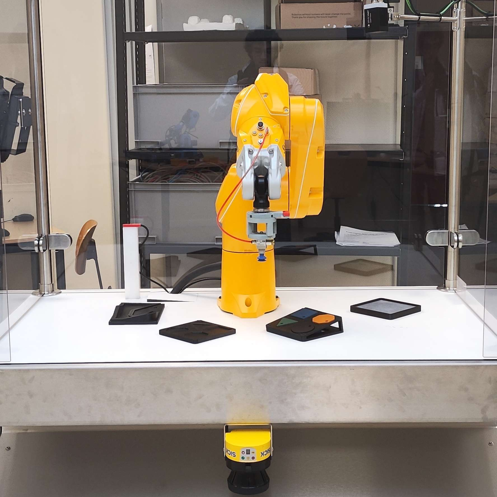
Développement d'une application en VAL3 permettant de contrôler un bras robotique 6 axes.
Utilisation du langage Ladder et GRAFCET, tests sur banc didactique,
analyse fonctionnelle et validation du comportement du système.
SAÉ 6 : Programmation d’automate
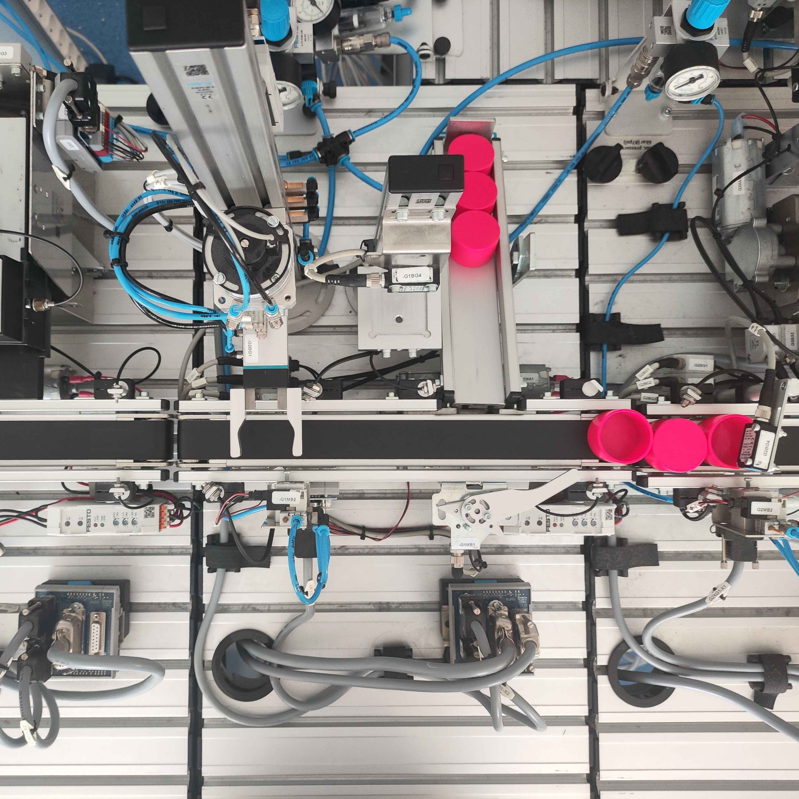
Développement d'un programme GRAFCET via codesys pour des stations utilisant des automates Festo
Utilisation du langage Ladder et GRAFCET, tests sur banc didactique,
analyse fonctionnelle et validation du comportement du système.
SAÉ 5 : Armoire électrique
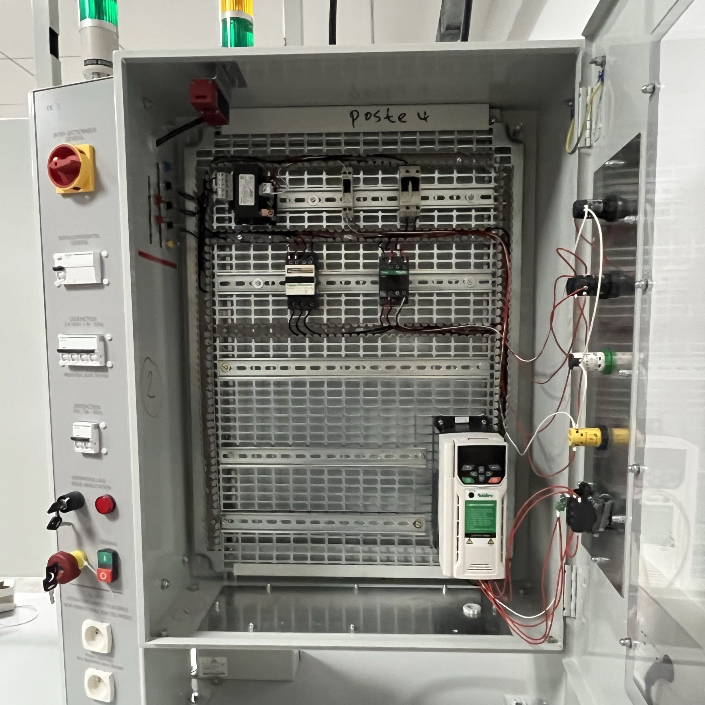
Réalisation d’une armoire industrielle afin de piloter un moteur asynchrone.
Lecture de schémas, création de schémas électriques avec WinRelais, câblage, respect des normes de sécurité
et mise en service du système.
SAÉ 4 : UAD station météo
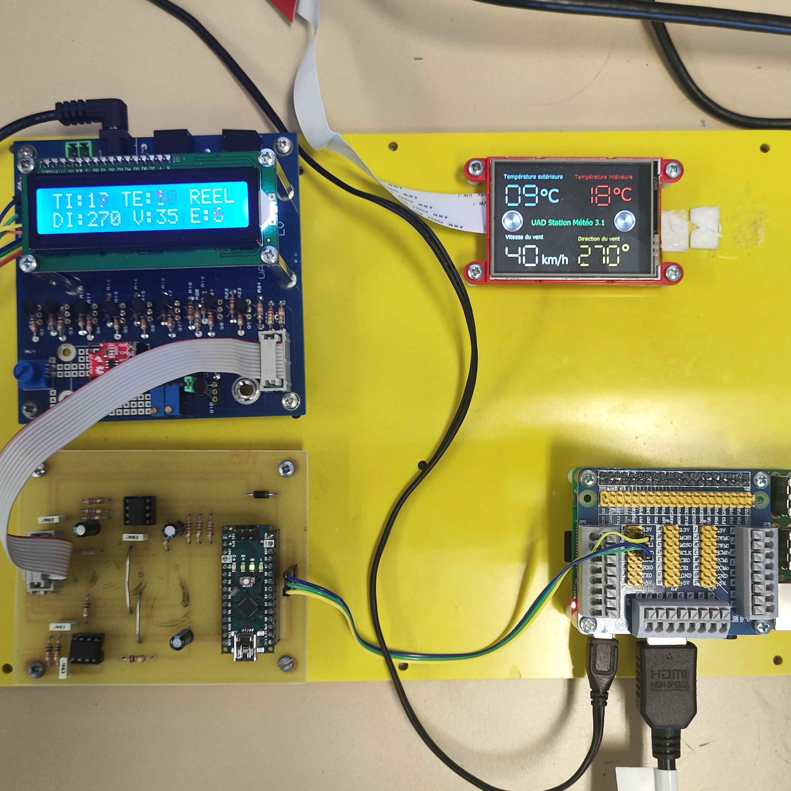
Système de génération, d'acquisition et de stockage de données météorologiques simulées.
Ce système est composé de 3 élements principaux :
- La carte SIMCAP (SIMulation CAPteurs), qui génère 4 signaux météorologiques : température intérieure, extérieure, vitesse et direction du vent.
- La carte MICAP (MIse en forme CApteurs), qui filtre et traite les signaux avant de les convertir en données numériques.
- Une Pi 3, qui récupère les données traitées via I2C pour les délivrer à l'utilisateur sous différentes formes (tableau CSV, affichage sur écran tactile, page web, liaison TTL avec un pc)
- La carte SIMCAP (SIMulation CAPteurs), qui génère 4 signaux météorologiques : température intérieure, extérieure, vitesse et direction du vent.
- La carte MICAP (MIse en forme CApteurs), qui filtre et traite les signaux avant de les convertir en données numériques.
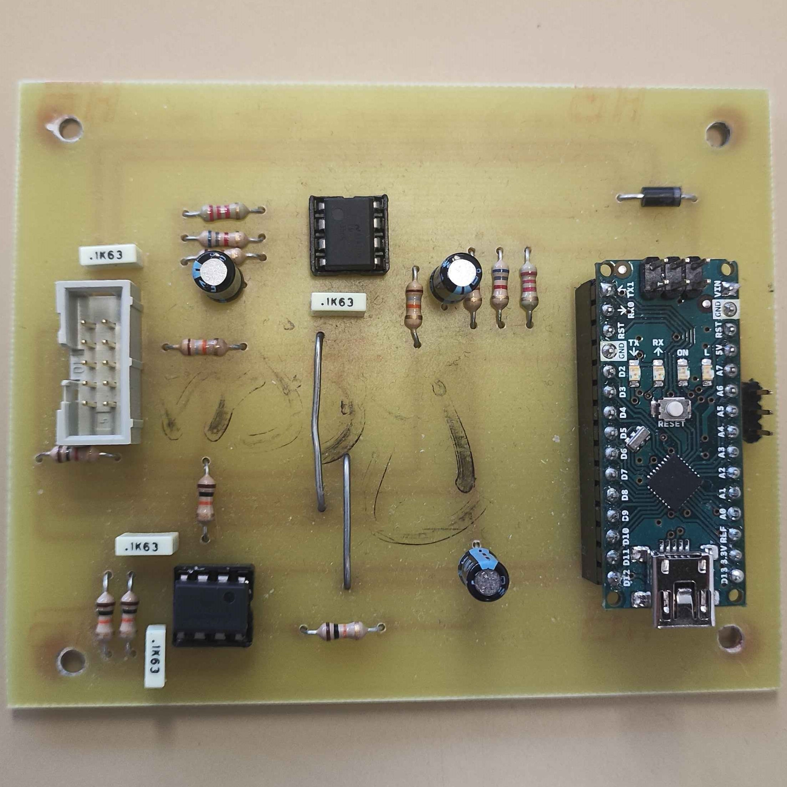
- Une Pi 3, qui récupère les données traitées via I2C pour les délivrer à l'utilisateur sous différentes formes (tableau CSV, affichage sur écran tactile, page web, liaison TTL avec un pc)
BUT GEII - 1ʳᵉ année
Concours de robotique
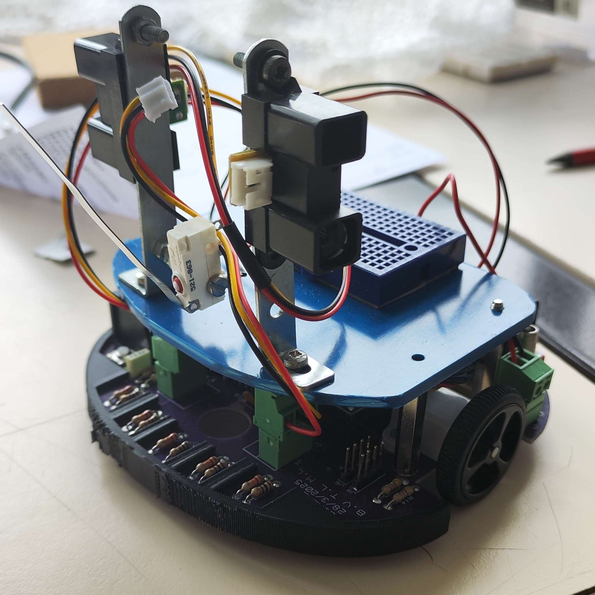
Conception d'une version miniature améliorée des robots Linéa
- Conception d'un circuit imprimé intégrant de nouveaux capteurs de suivi de ligne, une nouvelle alimentation ainsi que des encodeurs.
- Programmation d’un microcontrôleur PIC18F2520 en langage C, basée sur une logique séquentielle, afin de répondre aux différents défis proposés.
- Complément : article de l'IUT sur le concours Cachan 2025
SAÉ 3 : Feu tricolore
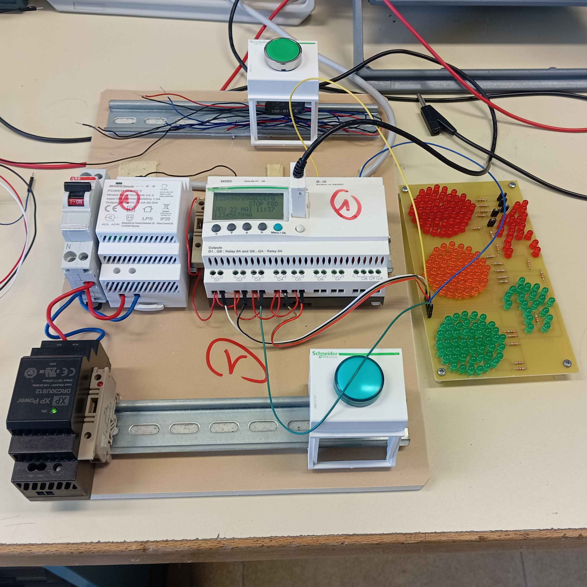
Automatisation d’un carrefour routier.
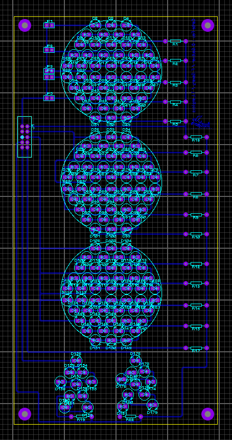
SAÉ 2 : Linéa
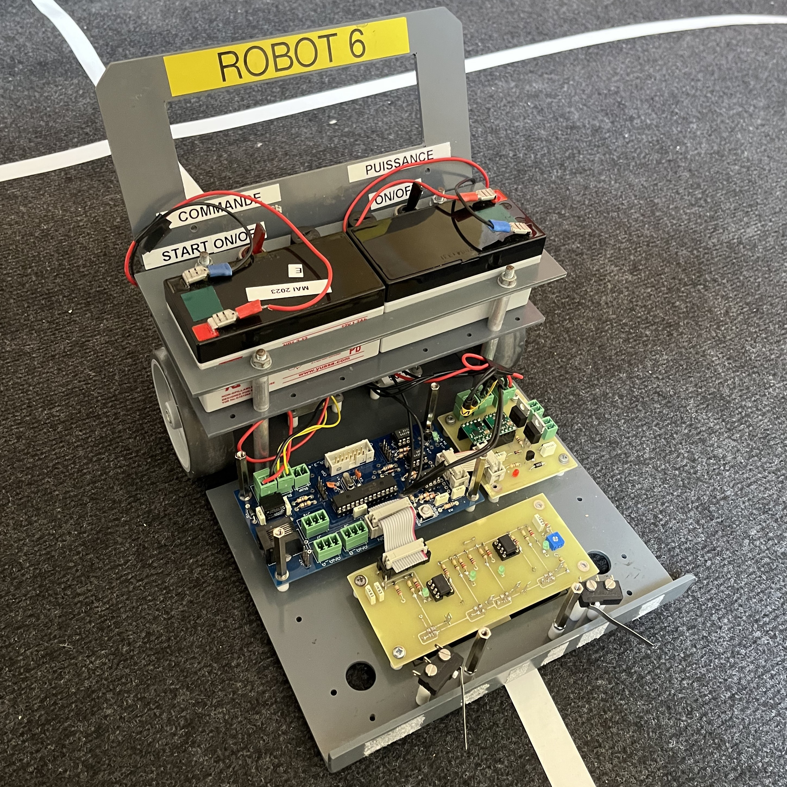
Conception d'un robot suiveur de ligne
Objectifs :
- Concevoir, fabriquer, mettre au point 2 carte, l'une permettant la commande de 2 moteurs à courant continu via ponts en H et l'autre permettant au robot de suivre une ligne via capteurs optiques réflectifs.
- Programmation d'un PIC18F2520 (langage C) permettant de mettre en œuvre le robot afin de répondre aux différentes demandes.
- Concevoir, fabriquer, mettre au point 2 carte, l'une permettant la commande de 2 moteurs à courant continu via ponts en H et l'autre permettant au robot de suivre une ligne via capteurs optiques réflectifs.
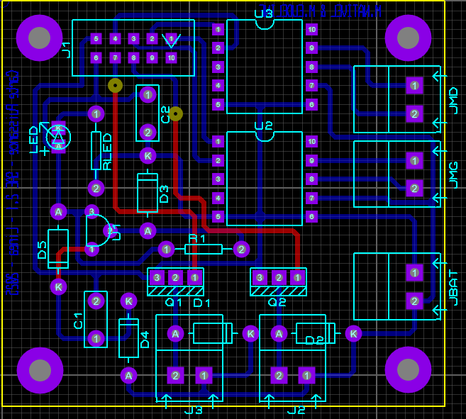
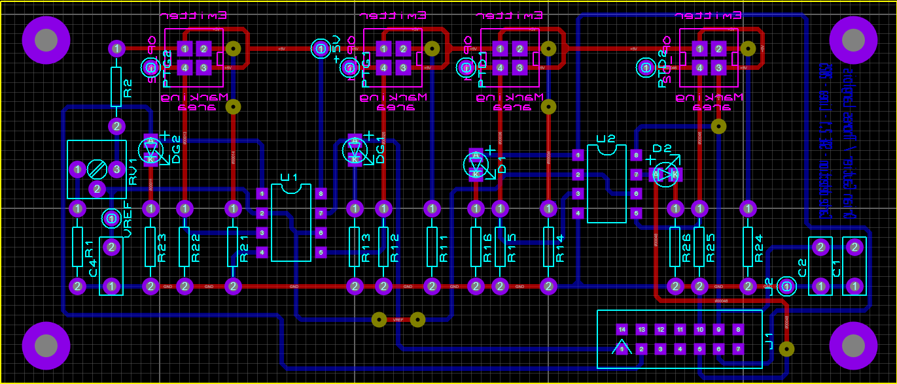
- Programmation d'un PIC18F2520 (langage C) permettant de mettre en œuvre le robot afin de répondre aux différentes demandes.
SAÉ 1 : Pilomo
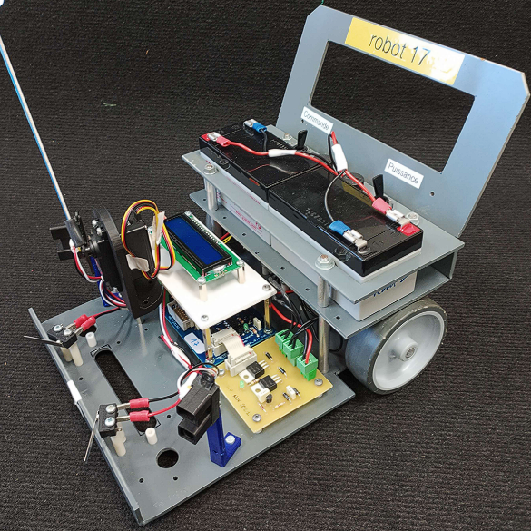
Projet d’initiation à la robotique mobile.
Objectifs :
- Concevoir, fabriquer, mettre au point une carte permettant la commande de 2 moteurs à courant continu via MOSFETs.
- Programmation de l'arduino nano (langage C++) permettant de mettre en œuvre le robot afin de répondre aux différentes demandes.
- Concevoir, fabriquer, mettre au point une carte permettant la commande de 2 moteurs à courant continu via MOSFETs.
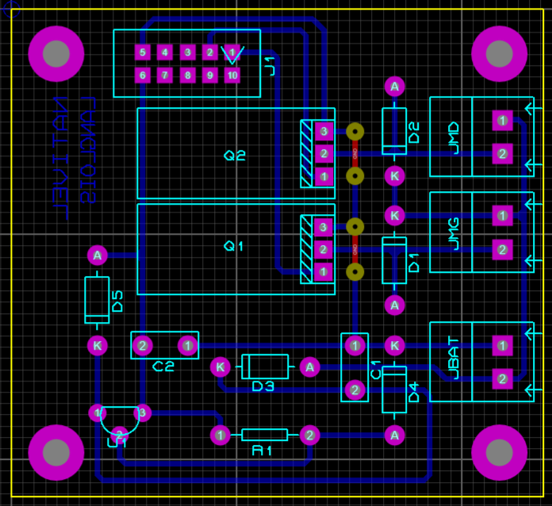
- Programmation de l'arduino nano (langage C++) permettant de mettre en œuvre le robot afin de répondre aux différentes demandes.